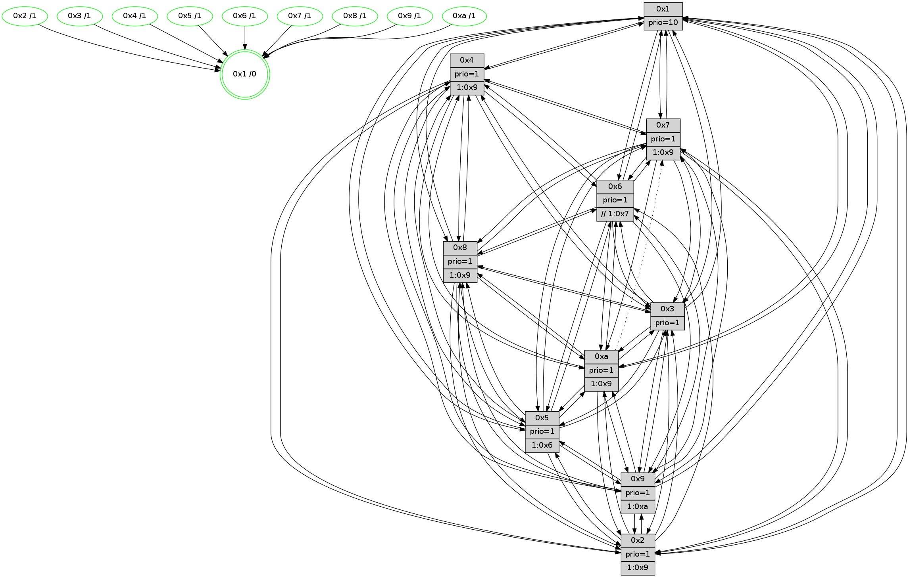

>> << IDX [start] -100 -25 -5 +0 [1655.50362206]
 Previous packets
1650.006684 beacon03(faad) #0 coord=01,02,03,04,05,06,07,0a,09,08 cycle=688.0ms assoc 64 44 b1
1650.016685 beacon04(faad) #0 coord=01,02,03,04,05,06,07,0a,09,08 cycle=688.0ms assoc 64 33 5b
1650.026686 beacon05(faad) #0 coord=01,02,03,04,05,06,07,0a,09,08 cycle=688.0ms assoc 64 49 16
1650.036686 beacon06(faad) #0 coord=01,02,03,04,05,06,07,0a,09,08 cycle=688.0ms assoc 64 c7 c1
1650.046685 beacon07(faad) #0 coord=01,02,03,04,05,06,07,0a,09,08 cycle=688.0ms assoc 64 bd 8c
1650.056691 beacon0a(faad) #0 coord=01,02,03,04,05,06,07,0a,09,08 cycle=688.0ms assoc 64 cc 87
1650.076692 beacon08(faad) #0 coord=01,02,03,04,05,06,07,0a,09,08 cycle=688.0ms assoc 64 38 1d
1650.089502 [Hello(8): seq=995 sym=5,2,3,7,9,6,4,10,1 sysInfo=hasWarning stat=5:14,14,14,4/2:1,5,7,1/3:1,15,14,7/7:9,4,13,2/9:4,14,2,10/6:13,12,10,6/4:7,0,5,3/10:13,13,7,8/1:7,6,3,0]
1650.092536 [Hello(10): seq=984 sym=6,2,3,8,7,5,9,4,1 sysInfo=hasWarning stat=6:14,1,8,11/2:4,5,12,5/3:13,9,6,2/8:6,4,14,8/7:15,8,7,2/5:7,5,12,5/9:11,3,6,1/4:2,3,1,0/1:7,12,13,1]
1650.096196 [Color(5) seq=558 @0:0 prio=1 >1.@6,1.@7,1.@8,1.@9]
1650.098123 [Color(1) seq=731 @0:0 prio=10]
1650.101132 [Hello(7): seq=1051 sym=2,3,5,6,8,4,9,10,1 sysInfo=hasWarning stat=2:8,14,8,9/3:12,5,0,9/5:8,2,3,7/6:7,7,7,3/8:0,10,13,3/4:0,1,1,0/9:0,1,0,0/10:0,1,0,0/1:8,4,13,0]
1650.108212 [Hello(9): seq=995 sym=2,5,3,4,7,6,8,10,1 sysInfo=hasWarning stat=2:3,1,12,0/5:7,3,14,2/3:3,4,12,9/4:7,12,3,0/7:6,9,2,0/6:1,15,8,7/8:7,10,1,11/10:4,7,1,0/1:0,1,0,1]
1650.111509 [Hello(4): seq=1051 sym=5,8,6,2,3,9,7,10,1 sysInfo=hasWarning stat=5:10,8,5,6/8:3,7,12,1/6:2,1,3,8/2:3,5,11,6/3:6,7,5,3/9:7,1,6,7/7:0,14,11,3/10:4,0,14,1/1:9,12,14,1]
1650.114980 [Color(4) seq=568 @0:0 prio=1 >1.@5,1.@9,1.@a]
1650.119293 [Color(9) seq=577 @0:0 prio=1 >1.@5,1.@a]
----------------------------------------------------------------------
1650.774834 beacon01(faad) #0 coord=01,02,03,04,05,06,07,0a,09,08 cycle=688.0ms assoc
-- color-indic=1 64 39 14
1650.784815 beacon02(faad) #0 coord=01,02,03,04,05,06,07,0a,09,08 cycle=688.0ms assoc 64 aa 25
1650.794816 beacon03(faad) #0 coord=01,02,03,04,05,06,07,0a,09,08 cycle=688.0ms assoc 64 d0 68
1650.804817 beacon04(faad) #0 coord=01,02,03,04,05,06,07,0a,09,08 cycle=688.0ms assoc 64 a7 82
1650.814817 beacon05(faad) #0 coord=01,02,03,04,05,06,07,0a,09,08 cycle=688.0ms assoc 64 dd cf
1650.824818 beacon06(faad) #0 coord=01,02,03,04,05,06,07,0a,09,08 cycle=688.0ms assoc 64 53 18
1650.834817 beacon07(faad) #0 coord=01,02,03,04,05,06,07,0a,09,08 cycle=688.0ms assoc 64 29 55
1650.844822 beacon0a(faad) #0 coord=01,02,03,04,05,06,07,0a,09,08 cycle=688.0ms assoc 64 58 5e
1650.854822 beacon09(faad) #0 coord=01,02,03,04,05,06,07,0a,09,08 cycle=688.0ms assoc 64 d6 89
1650.864823 beacon08(faad) #0 coord=01,02,03,04,05,06,07,0a,09,08 cycle=688.0ms assoc 64 ac c4
1650.876045 [Hello(5): seq=1052 sym=7,6,4,2,1,9,8,10,3 sysInfo=hasWarning stat=7:14,1,11,3/6:14,7,9,5/4:9,3,13,1/2:9,15,9,3/1:7,15,6,0/9:5,14,5,0/8:11,12,2,10/10:12,13,10,13/3:13,11,13,1]
1650.880446 [Hello(2): seq=1048 sym=4,5,7,6,3,9,8,10,1 sysInfo=hasWarning stat=4:14,1,5,1/5:8,11,5,6/7:6,11,0,5/6:6,7,0,0/3:2,6,0,0/9:7,14,4,14/8:11,2,0,1/10:7,0,2,0/1:11,9,9,0]
1650.882956 [Hello(6): seq=1052 sym=3,2,5,4,7,9,8,10,1 sysInfo=hasWarning stat=3:12,7,6,2/2:9,3,11,4/5:8,11,10,9/4:4,9,4,12/7:2,12,11,2/9:10,14,11,15/8:4,5,13,12/10:5,14,3,2/1:2,13,14,1]
1650.886133 [Color(8) seq=639 @0:0 prio=1 >1.@5,1.@9,1.@a]
1650.888001 [Color(2) seq=612 @0:0 prio=1 >1.@5,1.@9,1.@a]
1650.890060 [Color(6) seq=684 @0:0 prio=1 >>1.@7,1.@8,1.@9]
1650.892492 [Hello(1): seq=961 sym=4,2,9,5,10,3,8,6,7 sysInfo=coloring-mode-on,ColoringModeRequestCalled stat=4:11,3,4,5/2:12,8,1,10/9:9,9,1,7/5:15,8,6,14/10:14,0,10,11/3:8,3,14,0/8:15,13,2,9/6:5,15,4,9/7:3,4,8,5]
1650.898852 [Hello(3): seq=1052 sym=1,7,6,2,4,8,9,10,5 sysInfo=hasWarning stat=1:7,3,6,0/7:15,6,15,1/6:8,11,1,0/2:15,1,4,0/4:6,1,12,1/8:9,6,2,10/9:4,7,7,5/10:15,13,11,9/5:14,12,15,5]
1650.902301 [Color(3) seq=681 @0:0 prio=1]
----------------------------------------------------------------------
1651.562967 beacon01(faad) #0 coord=01,02,03,04,05,06,07,0a,09,08 cycle=688.0ms assoc
-- color-indic=1 64 85 11
1651.572948 beacon02(faad) #0 coord=01,02,03,04,05,06,07,0a,09,08 cycle=688.0ms assoc 64 16 20
1651.582949 beacon03(faad) #0 coord=01,02,03,04,05,06,07,0a,09,08 cycle=688.0ms assoc 64 6c 6d
1651.592951 beacon04(faad) #0 coord=01,02,03,04,05,06,07,0a,09,08 cycle=688.0ms assoc 64 1b 87
1651.602949 beacon05(faad) #0 coord=01,02,03,04,05,06,07,0a,09,08 cycle=688.0ms assoc 64 61 ca
1651.612949 beacon06(faad) #0 coord=01,02,03,04,05,06,07,0a,09,08 cycle=688.0ms assoc 64 ef 1d
1651.622953 beacon07(faad) #0 coord=01,02,03,04,05,06,07,0a,09,08 cycle=688.0ms assoc 64 95 50
1651.632954 beacon0a(faad) #0 coord=01,02,03,04,05,06,07,0a,09,08 cycle=688.0ms assoc 64 e4 5b
1651.642956 beacon09(faad) #0 coord=01,02,03,04,05,06,07,0a,09,08 cycle=688.0ms assoc 64 6a 8c
1651.652957 beacon08(faad) #0 coord=01,02,03,04,05,06,07,0a,09,08 cycle=688.0ms assoc 64 10 c1
1651.664826 [Hello(8): seq=996 sym=5,2,3,7,9,6,4,10,1 sysInfo=hasWarning stat=5:15,15,14,4/2:1,6,7,1/3:2,0,14,7/7:10,5,13,2/9:5,15,2,10/6:13,13,10,6/4:8,1,5,3/10:14,13,7,8/1:8,7,3,0]
1651.671980 [Color(9) seq=578 @0:0 prio=1 >1.@a]
1651.674484 [Hello(7): seq=1052 sym=2,3,5,6,8,4,9,10,1 sysInfo=hasWarning stat=2:9,15,8,9/3:13,6,0,9/5:9,2,3,7/6:8,8,7,3/8:1,11,13,3/4:1,2,1,0/9:1,2,0,0/10:0,1,0,0/1:9,4,13,0]
1651.677941 [Color(7) seq=559 @0:0 prio=1 >1.@9,1.@a]
1651.679764 [Hello(10): seq=985 sym=6,2,3,8,5,9,4,1 asym=7 sysInfo=hasWarning stat=6:15,2,8,11/2:5,6,12,5/3:14,10,6,2/8:7,5,14,8/5:8,5,12,5/9:12,4,6,1/4:3,4,1,0/1:8,12,13,1/7:15,8,7,2]
1651.682639 [Color(10) seq=629 @0:0 prio=1 >1.@9]
1651.684615 [Color(1) seq=732 @0:0 prio=10]
1651.685863 [Color(4) seq=569 @0:0 prio=1 >1.@9,1.@a]
1651.688332 [Color(5) seq=559 @0:0 prio=1 >1.@6,1.@7,1.@8,1.@9]
----------------------------------------------------------------------
1652.351098 beacon01(faad) #0 coord=01,02,03,04,05,06,07,0a,09,08 cycle=688.0ms assoc
-- color-indic=1 64 41 1f
1652.361080 beacon02(faad) #0 coord=01,02,03,04,05,06,07,0a,09,08 cycle=688.0ms assoc 64 d2 2e
1652.371080 beacon03(faad) #0 coord=01,02,03,04,05,06,07,0a,09,08 cycle=688.0ms assoc 64 a8 63
1652.381080 beacon04(faad) #0 coord=01,02,03,04,05,06,07,0a,09,08 cycle=688.0ms assoc 64 df 89
1652.391081 beacon05(faad) #0 coord=01,02,03,04,05,06,07,0a,09,08 cycle=688.0ms assoc 64 a5 c4
1652.401080 beacon06(faad) #0 coord=01,02,03,04,05,06,07,0a,09,08 cycle=688.0ms assoc 64 2b 13
1652.411083 beacon07(faad) #0 coord=01,02,03,04,05,06,07,0a,09,08 cycle=688.0ms assoc 64 51 5e
1652.421088 beacon0a(faad) #0 coord=01,02,03,04,05,06,07,0a,09,08 cycle=688.0ms assoc 64 20 55
1652.431088 beacon09(faad) #0 coord=01,02,03,04,05,06,07,0a,09,08 cycle=688.0ms assoc 64 ae 82
1652.441086 beacon08(faad) #0 coord=01,02,03,04,05,06,07,0a,09,08 cycle=688.0ms assoc 64 d4 cf
1652.454225 [Hello(1): seq=962 sym=4,2,9,5,10,3,8,6,7 sysInfo=coloring-mode-on,ColoringModeRequestCalled stat=4:11,4,4,5/2:12,8,1,10/9:9,9,1,7/5:15,9,6,14/10:14,0,10,11/3:9,4,14,0/8:0,13,2,9/6:5,15,4,9/7:3,4,8,5]
1652.457225 [Hello(5): seq=1053 sym=7,6,4,2,1,9,8,10,3 sysInfo=hasWarning stat=7:14,1,11,3/6:15,8,9,5/4:9,3,13,1/2:10,0,9,3/1:8,15,6,0/9:5,14,5,0/8:12,13,2,10/10:12,13,10,13/3:14,12,13,1]
1652.460921 [Hello(6): seq=1053 sym=3,2,5,4,7,9,8,10,1 sysInfo=hasWarning stat=3:13,8,6,2/2:9,3,11,4/5:9,12,10,9/4:4,10,4,12/7:3,13,11,2/9:11,15,11,15/8:5,5,13,12/10:6,15,3,2/1:3,14,14,1]
1652.464246 [Hello(3): seq=1053 sym=1,7,6,2,4,8,9,10,5 sym= sysInfo=hasWarning stat=]
1652.467141 [Hello(2): seq=1049 sym=4,5,7,6,3,9,8,10,1 sysInfo=hasWarning stat=4:15,2,5,1/5:9,12,5,6/7:7,12,0,5/6:6,8,0,0/3:3,7,0,0/9:7,15,4,14/8:12,2,0,1/10:8,1,2,0/1:12,10,9,0]
1652.470253 [STC(1) #0.304 new-neigh,tree-change,inconsistent-stability,stable,to-color d=0]
1652.471884 [Color(2) seq=613 @0:0 prio=1 >1.@9,1.@a]
1652.478281 [Color(8) seq=640 @0:0 prio=1 >1.@9,1.@a]
1652.480126 [Color(6) seq=685 @0:0 prio=1 >>1.@7,1.@8,1.@9]
1652.483057 [Color(3) seq=682 @0:0 prio=1]
----------------------------------------------------------------------
1653.139228 beacon01(faad) #0 coord=01,02,03,04,05,06,07,0a,09,08 cycle=688.0ms assoc
-- color-indic=1 64 fd 1a
1653.149209 beacon02(faad) #0 coord=01,02,03,04,05,06,07,0a,09,08 cycle=688.0ms assoc 64 6e 2b
1653.159210 beacon03(faad) #0 coord=01,02,03,04,05,06,07,0a,09,08 cycle=688.0ms assoc 64 14 66
1653.169211 beacon04(faad) #0 coord=01,02,03,04,05,06,07,0a,09,08 cycle=688.0ms assoc 64 63 8c
1653.179210 beacon05(faad) #0 coord=01,02,03,04,05,06,07,0a,09,08 cycle=688.0ms assoc 64 19 c1
1653.189210 beacon06(faad) #0 coord=01,02,03,04,05,06,07,0a,09,08 cycle=688.0ms assoc 64 97 16
1653.199211 beacon07(faad) #0 coord=01,02,03,04,05,06,07,0a,09,08 cycle=688.0ms assoc 64 ed 5b
1653.209217 beacon0a(faad) #0 coord=01,02,03,04,05,06,07,0a,09,08 cycle=688.0ms assoc 64 9c 50
1653.219215 beacon09(faad) #0 coord=01,02,03,04,05,06,07,0a,09,08 cycle=688.0ms assoc 64 12 87
1653.229217 beacon08(faad) #0 coord=01,02,03,04,05,06,07,0a,09,08 cycle=688.0ms assoc 64 68 ca
1653.241410 [Hello(8): seq=997 sym=5,2,3,7,9,6,4,10,1 sysInfo=hasWarning stat=5:15,0,14,4/2:1,6,7,1/3:2,1,14,7/7:11,6,13,2/9:6,0,2,10/6:13,14,10,6/4:8,2,5,3/10:15,14,7,8/1:9,8,3,0]
1653.244796 [Hello(4): seq=1053 sym=5,8,6,2,3,9,7,10,1 sysInfo=hasWarning stat=5:12,9,5,6/8:5,9,12,1/6:4,3,3,8/2:5,7,11,6/3:8,9,5,3/9:7,2,6,7/7:0,14,11,3/10:4,0,14,1/1:11,12,15,1]
1653.247610 [Hello(7): seq=1053 sym=2,3,5,6,8,4,9,10,1 sym= sysInfo=hasWarning stat=]
1653.252678 [STC(7)->1 #0.304 new-neigh,tree-change,inconsistent-stability,stable,to-color d=1]
1653.254773 [STC(5)->1 #0.304 new-neigh,tree-change,inconsistent-stability,stable,to-color d=1]
1653.256871 [Hello(9): seq=997 sym=2,5,3,4,7,6,8,10,1 sysInfo=hasWarning stat=2:5,3,12,0/5:9,4,14,2/3:5,6,12,9/4:7,13,3,0/7:7,10,2,0/6:3,1,8,7/8:9,12,1,11/10:5,8,1,0/1:2,2,1,1]
1653.260030 [Color(5) seq=560 @0:0 prio=1 >1.@6,1.@7,1.@8,1.@9]
1653.261830 [Hello(10): seq=986 sym=6,2,3,8,5,9,4,1 asym=7 sysInfo=hasWarning stat=6:0,3,8,11/2:6,7,12,5/3:15,11,6,2/8:8,6,14,8/5:9,6,12,5/9:12,4,6,1/4:3,5,1,0/1:9,13,14,1/7:15,8,7,2]
1653.264483 [STC(4)->1 #0.304 new-neigh,tree-change,inconsistent-stability,stable,to-color d=1]
1653.267071 [Color(4) seq=570 @0:0 prio=1 >1.@9,1.@a]
1653.269326 [STC(10)->1 #0.304 new-neigh,tree-change,inconsistent-stability,stable,to-color d=1]
1653.270982 [Color(10) seq=630 @0:0 prio=1 >1.@9]
1653.273141 [Color(1) seq=733 @0:0 prio=10]
1653.274594 [Color(7) seq=560 @0:0 prio=1 >1.@9,1.@a]
1653.276863 [STC(9)->1 #0.304 new-neigh,tree-change,inconsistent-stability,stable,to-color d=1]
1653.278823 [TreeStatus(9)-.->1 #0.304 new-neigh,tree-change,inconsistent-stability,stable child=1]
1653.280952 [Color(9) seq=579 @0:0 prio=1 >1.@a]
----------------------------------------------------------------------
1653.927360 beacon01(faad) #0 coord=01,02,03,04,05,06,07,0a,09,08 cycle=688.0ms assoc
-- color-indic=1 64 c9 02
1653.937342 beacon02(faad) #0 coord=01,02,03,04,05,06,07,0a,09,08 cycle=688.0ms assoc 64 5a 33
1653.947342 beacon03(faad) #0 coord=01,02,03,04,05,06,07,0a,09,08 cycle=688.0ms assoc 64 20 7e
1653.957342 beacon04(faad) #0 coord=01,02,03,04,05,06,07,0a,09,08 cycle=688.0ms assoc 64 57 94
1653.967342 beacon05(faad) #0 coord=01,02,03,04,05,06,07,0a,09,08 cycle=688.0ms assoc 64 2d d9
1653.977342 beacon06(faad) #0 coord=01,02,03,04,05,06,07,0a,09,08 cycle=688.0ms assoc 64 a3 0e
1653.987344 beacon07(faad) #0 coord=01,02,03,04,05,06,07,0a,09,08 cycle=688.0ms assoc 64 d9 43
1653.997347 beacon0a(faad) #0 coord=01,02,03,04,05,06,07,0a,09,08 cycle=688.0ms assoc 64 a8 48
1654.007348 beacon09(faad) #0 coord=01,02,03,04,05,06,07,0a,09,08 cycle=688.0ms assoc 64 26 9f
1654.017349 beacon08(faad) #0 coord=01,02,03,04,05,06,07,0a,09,08 cycle=688.0ms assoc 64 5c d2
1654.028300 [Hello(1): seq=963 sym=4,2,9,5,10,3,8,6,7 sysInfo=coloring-mode-on,ColoringModeRequestCalled stat=4:11,4,4,5/2:12,9,1,10/9:9,10,2,8/5:15,9,6,14/10:14,0,10,11/3:9,5,14,0/8:1,13,2,9/6:5,0,4,9/7:3,5,8,5]
1654.032545 [Hello(5): seq=1054 sym=7,6,4,2,1,9,8,10,3 sysInfo=hasWarning stat=7:14,2,11,3/6:0,9,9,5/4:9,4,14,1/2:11,1,9,3/1:8,0,7,0/9:5,15,6,1/8:13,14,2,10/10:13,14,11,13/3:15,13,13,1]
1654.035064 [Hello(3): seq=1054 sym=1,7,6,2,4,8,9,10,5 sysInfo=hasWarning stat=1:8,5,6,0/7:1,8,0,1/6:8,11,1,0/2:15,1,4,0/4:7,3,13,1/8:11,6,2,10/9:6,9,8,6/10:1,15,12,9/5:15,14,0,5]
1654.037852 [Color(8) seq=641 @0:0 prio=1 >1.@9,1.@a]
1654.039567 [Hello(6): seq=1054 sym=3,5,4,7,9,8,10,1 sysInfo=hasWarning stat=3:13,9,6,2/5:9,13,11,9/4:5,11,5,12/7:4,14,12,2/9:12,0,12,0/8:6,5,13,12/10:7,0,4,2/1:4,15,14,1]
1654.042571 [Color(6) seq=686 @0:0 prio=1 >>1.@7,1.@8,1.@9]
1654.049365 [Color(3) seq=683 @0:0 prio=1]
1654.055406 [Hello(2): seq=1050 sym=4,5,7,6,3,9,8,10,1 sysInfo=hasWarning stat=4:0,3,6,1/5:9,13,6,6/7:8,13,1,5/6:6,9,0,0/3:3,8,0,0/9:8,0,5,15/8:13,3,0,1/10:9,2,3,0/1:13,11,9,0]
1654.058887 [Color(2) seq=614 @0:0 prio=1 >1.@9,1.@a]
----------------------------------------------------------------------
1654.715491 beacon01(faad) #0 coord=01,02,03,04,05,06,07,0a,09,08 cycle=688.0ms assoc
-- color-indic=1 64 75 07
1654.725473 beacon02(faad) #0 coord=01,02,03,04,05,06,07,0a,09,08 cycle=688.0ms assoc 64 e6 36
1654.735474 beacon03(faad) #0 coord=01,02,03,04,05,06,07,0a,09,08 cycle=688.0ms assoc 64 9c 7b
1654.745474 beacon04(faad) #0 coord=01,02,03,04,05,06,07,0a,09,08 cycle=688.0ms assoc 64 eb 91
1654.755475 beacon05(faad) #0 coord=01,02,03,04,05,06,07,0a,09,08 cycle=688.0ms assoc 64 91 dc
1654.765473 beacon06(faad) #0 coord=01,02,03,04,05,06,07,0a,09,08 cycle=688.0ms assoc 64 1f 0b
1654.775474 beacon07(faad) #0 coord=01,02,03,04,05,06,07,0a,09,08 cycle=688.0ms assoc 64 65 46
1654.785479 beacon0a(faad) #0 coord=01,02,03,04,05,06,07,0a,09,08 cycle=688.0ms assoc 64 14 4d
1654.805479 beacon08(faad) #0 coord=01,02,03,04,05,06,07,0a,09,08 cycle=688.0ms assoc 64 e0 d7
1654.817332 [Hello(8): seq=998 sym=5,2,3,7,9,6,4,10,1 sysInfo=hasWarning stat=5:15,1,15,4/2:2,7,7,1/3:2,2,14,7/7:12,7,14,2/9:7,1,3,11/6:14,15,10,6/4:9,3,6,3/10:0,15,8,8/1:10,9,3,0]
1654.820901 [Hello(4): seq=1054 sym=5,8,6,2,3,9,7,10,1 sysInfo=hasWarning stat=5:13,9,5,6/8:6,10,12,1/6:5,4,3,8/2:6,8,11,6/3:9,10,5,3/9:7,3,7,8/7:0,15,11,3/10:4,1,15,1/1:12,13,15,1]
1654.824373 [Color(4) seq=571 @0:0 prio=1 >1.@9,1.@a]
1654.827008 [Hello(10): seq=987 sym=6,2,3,8,5,9,4,1 asym=7 sysInfo=hasWarning stat=6:1,4,8,11/2:7,8,12,5/3:0,12,6,2/8:9,7,14,8/5:10,6,12,5/9:12,5,7,2/4:3,5,1,0/1:10,14,14,1/7:15,9,7,2]
1654.830105 [Hello(9): seq=998 sym=2,5,3,4,7,6,8,10,1 sysInfo=hasWarning stat=2:6,4,12,0/5:10,4,14,2/3:6,7,12,9/4:7,13,3,0/7:7,10,2,0/6:4,2,8,7/8:10,13,1,11/10:5,8,1,0/1:3,2,1,1]
1654.833551 [Color(9) seq=580 @0:0 prio=1 >1.@a]
1654.835235 [Color(1) seq=734 @0:0 prio=10]
1654.837668 [Hello(7): seq=1054 sym=2,3,5,6,8,4,9,10,1 sysInfo=hasWarning stat=2:11,1,8,9/3:15,8,0,9/5:11,3,3,7/6:10,10,7,3/8:3,13,13,3/4:1,3,1,0/9:1,3,1,1/10:1,2,0,0/1:11,5,14,0]
1654.840790 [Color(7) seq=561 @0:0 prio=1 >1.@9,1.@a]
1654.843977 [Color(10) seq=631 @0:0 prio=1 >1.@9]
1654.846221 [Color(5) seq=561 @0:0 prio=1 >1.@6,1.@7,1.@8,1.@9]